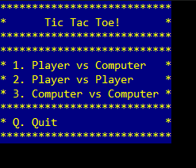
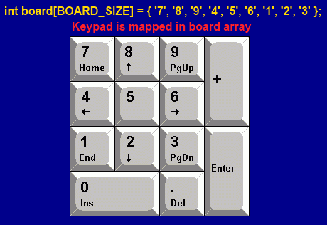
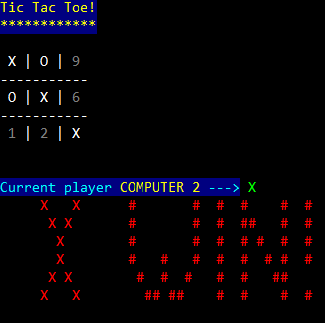

It's time to create function which can draw game board. First of all, you must add two files. One is header file called draw.h (add C++ header file as before), next is draw.c file (C++ source file). In the header file you only declare prototype of functions which you want to share to other programmers (interface), whereas in .c file you define the implementation of these functions. In .c file you may declare and define static functions which may be call from other functions in this same .c file. That means, if you want to hide some implementation details (some functions) you can use this method. This method is used here so you may see how it works. Ok, let's add some declarations to the draw.h file.
#ifndef DRAW_H #define DRAW_H #include "gamedef.h" /* draw menu */ void drawMenu(void); /* draws question - Do you want to play once again? */ void drawOnceAgain(void); /* draws game board and some information about game */ void draw(const int *board, const Player *currentPlayer, const GameStatus *status); #endif // DRAW_H
/* Notice: here is path to my conio2.h which is in conio folder
* so here it's full path declared.
* If you use Borland Turbo C++ you probably must change this on:
* #include <conio.h>
*/
#include <conio/conio2.h> /* Console input/output functions */
#include <ctype.h> /* character handling functions */
#include "draw.h" /* your drawing functions */
void drawMenu(void)
{
/* implement it later */
}
void drawOnceAgain(void)
{
/* implement it later */
}
void draw(const int *board, const Player *currentPlayer, const GameStatus *status)
{
/* implement it later */
}
Documentation for conio.h you can find here, for conio2.h here and for ctype.h here.
Small tip: i strongly advice you to use cplusplus site (here) as your C standard library reference. It's very well documented with examples, so use it!
void drawMenu(void)
{
clrscr();
textcolor(YELLOW);
textbackground(BLUE);
cprintf("%s", "***************************\n");
cprintf("%s", "* Tic Tac Toe! *\n");
cprintf("%s", "***************************\n");
cprintf("%s", "***************************\n");
cprintf("%s", "* 1. Player vs Computer *\n");
cprintf("%s", "* 2. Player vs Player *\n");
cprintf("%s", "* 3. Computer vs Computer *\n");
cprintf("%s", "***************************\n");
cprintf("%s", "* Q. Quit *\n");
cprintf("%s", "***************************\n");
textcolor(WHITE);
textbackground(BLACK);
}
clrscr() function (from conio.h) clears console to the background colour. If you set background color, for example to red ( textbackground(RED) ) and after that you use clrscr() you see cleared console with red background.
#include <conio/conio2.h>
#include "draw.h"
int main()
{
drawMenu();
getch();
return 0;
}
Compile your project and run it .
You should see this screen:

Ok, let's back to the draw.c file. Next thing to do it's implement the drawOnceAgain function. Let's do this.
void drawOnceAgain(void)
{
textcolor(WHITE);
cprintf("%s", "\nDo you want play again? ");
textcolor(LIGHTGREEN);
cprintf("%s", "(y/n)\n");
textcolor(LIGHTRED);
cprintf("%s", "(q) - quit\n");
textcolor(WHITE);
}
Doesn't need to explain. Of course you may check how this works by calling it from main.c (i think you know how to do it). Now, it's time to implement the main drawing function.
void draw(const int *board, const Player *currentPlayer, const GameStatus *status)
{
clrscr();
drawBoard(board);
drawCurrentPlayer(currentPlayer);
drawGameStatus(status);
}
The algorithm works like this:
int board[BOARD_SIZE] = { '7', '8', '9', '4', '5', '6', '1', '2', '3' }; Why numerical characters are used here instead of clear array with zeros? It's some advantage here to use it, because you may notice these numbers are mapped to numerical keypad. In the future will be easier to handle input from player. Array board was initialized by chars '7', '8' etc. which are automatically casted to the integer value.

First, you will implement drawBoard function. To implement it you need one more helper function to draw character on board.
inline static void printCharacterOnBoard(int character)
{
textbackground(BLACK);
if ( isdigit(character) )
{
textcolor(DARKGRAY);
}
else
{
textcolor(WHITE);
}
cprintf(" %c ", character);
}
Notice that function is inline and static. Inline means that will be put as-is in place where will be call. Static means, you may access to this function only in this .c file (so is hidden for other files). Function isdigit checks whether character is a digital number or not (more).
inline static void drawBoard(const int *board)
{
textbackground(BLUE);
textcolor(YELLOW);
cprintf("%s", "Tic Tac Toe!\n");
cprintf("%s", "************\n\n");
/* draw board */
textcolor(WHITE);
textbackground(BLACK);
printCharacterOnBoard(board[0]);
textcolor(WHITE);
cprintf("%s", "|");
printCharacterOnBoard(board[1]);
textcolor(WHITE);
cprintf("%s", "|");
printCharacterOnBoard(board[2]);
textcolor(WHITE);
cprintf("%s", "\n");
cprintf("%s", "-----------\n");
printCharacterOnBoard(board[3]);
textcolor(WHITE);
cprintf("%s", "|");
printCharacterOnBoard(board[4]);
textcolor(WHITE);
cprintf("%s", "|");
printCharacterOnBoard(board[5]);
textcolor(WHITE);
cprintf("%s", "\n");
cprintf("%s", "-----------\n");
printCharacterOnBoard(board[6]);
textcolor(WHITE);
cprintf("%s", "|");
printCharacterOnBoard(board[7]);
textcolor(WHITE);
cprintf("%s", "|");
printCharacterOnBoard(board[8]);
textcolor(WHITE);
cprintf("%s", "\n");
}
Function draws game board. Color depends of character, grey shows 'an empty' place to put sign, the white is used for player character and board frame.
inline static void drawCurrentPlayer(const Player *currentPlayer)
{
textcolor(LIGHTCYAN);
textbackground(BLUE);
cprintf("%s", "\n\nCurrent player ");
textcolor(YELLOW);
if(currentPlayer->type == PL_COMPUTER1)
{
cprintf("%s", "COMPUTER 1");
}
else if (currentPlayer->type == PL_COMPUTER2)
{
cprintf("%s", "COMPUTER 2");
}
else if (currentPlayer->type == PL_PLAYER1)
{
cprintf("%s", "PLAYER 1");
}
else if (currentPlayer->type == PL_PLAYER2)
{
cprintf("%s", "PLAYER 2");
}
textcolor(LIGHTCYAN);
cprintf("%s", " --->");
textbackground(BLACK);
textcolor(LIGHTGREEN);
cprintf(" %c\n", currentPlayer->character);
textbackground(BLACK);
textcolor(WHITE);
}
It draws information about current player depends of player type. Notice that currentPlayer pointer is const here. That means, function will only read currentPlayer.
inline static void drawGameStatus(const GameStatus *status)
{
if (*status == GS_DRAW)
{
textcolor(LIGHTGREEN);
cprintf("%s", " ### ### ### # # #\n");
cprintf("%s", " # # # # # # # # #\n");
cprintf("%s", " # # # # # # # # # #\n");
cprintf("%s", " # # ### ##### # # # #\n");
cprintf("%s", " # # # # # # # # # \n");
cprintf("%s", " ### # # # # ## ## #\n");
textcolor(WHITE);
}
else if (*status == GS_X_WIN)
{
textcolor(LIGHTRED);
cprintf("%s", " X X # # # # # #\n");
cprintf("%s", " X X # # # ## # #\n");
cprintf("%s", " X # # # # # # #\n");
cprintf("%s", " X # # # # # # # #\n");
cprintf("%s", " X X # # # # # ## \n");
cprintf("%s", " X X ## ## # # # #\n");
textcolor(WHITE);
}
else if (*status == GS_O_WIN)
{
textcolor(LIGHTCYAN);
cprintf("%s", " OOO # # # # # #\n");
cprintf("%s", " O O # # # ## # #\n");
cprintf("%s", " O O # # # # # # #\n");
cprintf("%s", " O O # # # # # # # #\n");
cprintf("%s", " O O # # # # # ## \n");
cprintf("%s", " OOO ## ## # # # #\n");
textcolor(WHITE);
}
}
It draws information who wins or draw situation.
#include <conio/conio2.h>
#include "draw.h"
#include "gamedef.h"
#include "gamecons.h"
int main()
{
int board[BOARD_SIZE] = { '7', '8', '9', '4', '5', '6', '1', '2', '3' };
Player player = { PL_COMPUTER2, 'X' };
GameStatus status = GS_X_WIN;
board[0] = 'X';
board[4] = 'X';
board[8] = 'X';
board[1] = 'O';
board[3] = 'O';
drawMenu();
drawOnceAgain();
draw(board, &player, &status);
getch();
return 0;
}
Result:

Sources for this part.